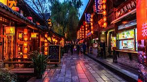
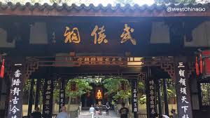
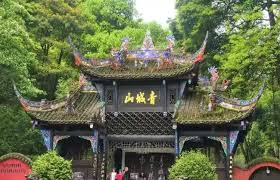

The closest panda sanctuary to the city. Best in the morning to see playful cubs.

Three Kingdoms culture meets Sichuan folk traditions. Gorgeous red lanterns at night.

China's only temple dedicated to both a ruler and his ministers. Iconic red walls.

"The most serene mountain under heaven" – birthplace of Taoism.
A 2,000‑year‑old marvel that still nurtures the Chengdu Plain.
Qing Dynasty relics blending culture, art, and local life.